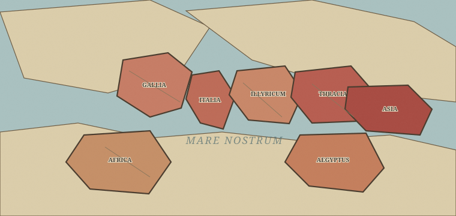

ROMA ÆTERNADe Marc Aurèle à 2026, faites survivre Rome sans figer l’Histoire.
Imperium RomanumCapitale · Roma
État du monde
L’Empire en 180
11 provinces

SPQR
romainfédérécontestéperdu
UCHRONIES · ANTIQUITÉ → 2026
ROMA ÆTERNA
Marc Aurèle vient de mourir. Pendant près de dix-huit siècles, vous allez arbitrer successions, invasions, religions, réformes, révolutions et guerres. L’Empire peut tomber en 476, survivre à Constantinople… ou ne jamais disparaître.
Une cinquantaine de crisesUne partie n’en rencontre qu’une partie : les autres sont supprimées par vos choix.
Histoire conditionnellePas de Charlemagne si la Gaule reste romaine. Pas de 1453 si les Ottomans n’encerclent jamais Constantinople.
Carte persistanteLes provinces perdues, fédérées, reconquises ou intégrées restent visibles jusqu’en 2026.